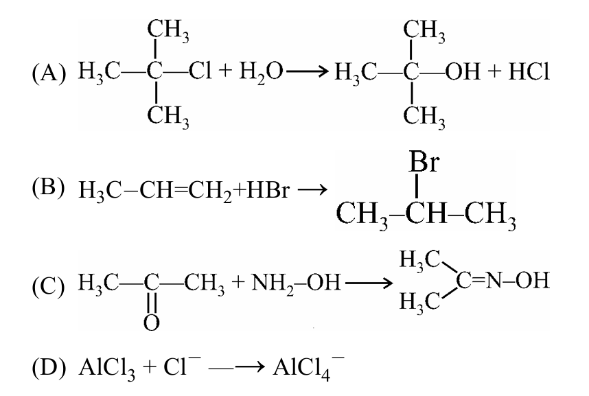
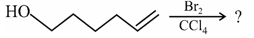
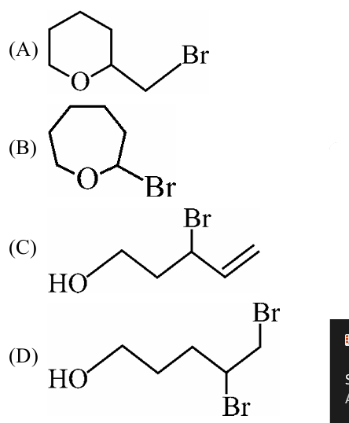
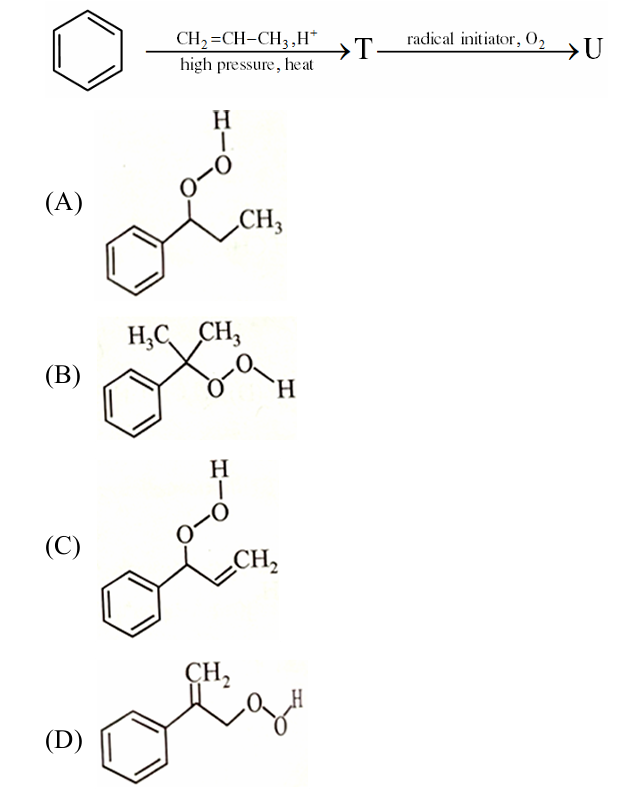
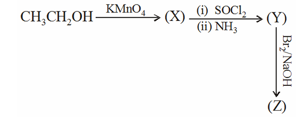
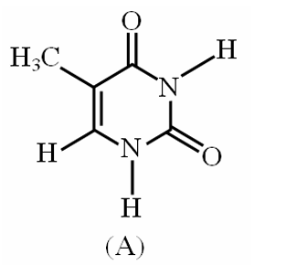

Chemistry
Section-I: Chemistry
1. The pH range of most suitable indicator which should be used for titration of NaX (0.1 M, 10 ml) with 0.1 M HCl should be (Kb of X-1 = 10⁻⁶)
(A) 2 to 3
(B) 3 to 5
(C) 6 to 8
(D) 8 to 10
2. Phenol is heated with chloroform and alcoholic KOH when salicylaldehyde is produced. This reaction is known as
(A) Fridel–Crafts reaction
(B) Reimer–Tiemann reaction
(C) Rosenmund reaction
(D) Perkin reaction
3. When phenyl magnesium bromide reacts with tertiary butanol, the product formed will be:
(A) Phenol
(B) Benzene
(C) Tertiary butyl phenyl ether
(D) Tertiary butyl benzene
4. In which reaction Ist compound acts as nucleophile?

(A)
(B)
(C)
(D)
5. Which of the following reactions is expected to take place by SN¹ mechanism?
(A)
(B)
(C)
(D)

6. Major product of above reaction is:

(A)
(B)
(C)
(D)
7. When 1 mol of a real gas absorbs 100 kJ heat at constant pressure of 10 bar, its volume changes from 2L to 2.5 L. What is the internal energy change for the real gas?
(A) 150 kJ
(B) 100 kJ
(C) 99.5 kJ
(D) 100.5 kJ
8. Enthalpy of hydrogenation of one mol benzene to cyclohexane is : Given : Resonance energy of benzene = – 70 kJ/mol Enthalpy of hydrogenation of cyclohexene = – 100 kJ/mol
(A) –170 kJ mol⁻¹
(B) –30 kJ mol⁻¹
(C) –370 kJ mol⁻¹
(D) –230 kJ mol⁻¹
9. When one mole of an ideal gas is compressed to half of its initial volume & simultaneously heated to twice its initial temperature. The change in entropy (ΔS) is :
(A) Cᵥln2
(B) Cₚln2
(C) Rln2
(D) (Cv –R) ln2
10. Assume that the decomposition of HNO₃ is 4HNO₃ (g) ⇌ 4NO₂(g) + 2H₂O(g) + O₂(g) and the reaction approaches equilibrium at 400K & 30 atm pressure. At equilibrium the partial pressure of HNO₃ is 2atm. Find Kₚ at 400 K (R = 0.08 ℓ – atm/K–mol)
(A) 4
(B) 8
(C) 16
(D) 32
11. SO₂(g) + Cl₂(g) ⇋ SO₂Cl₂(g) Backward reaction is endothermic. If some quantity of Cl₂ is added keeping volume of container constant which of the following statement is correct.
(A) No effect on instantaneous pressure of container
(B) Temp of container will increase
(C) Temp of container will decrease
(D) No effect on temperature of container
12. A certain weak acid has Kₐ = 1 × 10⁻⁴. Calculate the equilibrium constant for its reaction with strong base.
(A) 10⁶
(B) 10⁸
(C) 10¹⁰
(D) 10⁻¹⁰
13. The compound which undergo nucleophilic substitution fastest would be :
(A) CHCH3CONH 2
(B) CH₃CH₂COOCH₃
(C) CH₃CH₂COCl
(D) CH₃CH₂COCH₃
14. The major product U in the following reactions is:

(A)
(B)
(C)
(D)
15. In the following sequence of reactions ‘Z’ will be :

(A) Acetic acid
(B) Acetone
(C) Methyl amine
(D) Ethyl amine
16. Reaction correctly matched with major product :

(A)
(B)
(C)
(D)
17. Which of the following term is not applicable for Glucose–galactose pair?
(A) Isomer
(B) Epimer
(C) Anomer
(D) Stereoisomer
18. The compound 'A' is a complementary base of __________ in DNA strands.

(A) Uracil
(B) Guanine
(C) Adenine
(D) Cytosine
19. Which one of the following statements is not true about enzymes?
(A) Enzymes are non-specific for a reaction and substrate.
(B) Almost all enzymes are proteins.
(C) Enzymes work as catalysts by lowering the activation energy of a biochemical reaction.
(D) The action of enzymes is temperature and pH specific.
Section-II: Chemistry